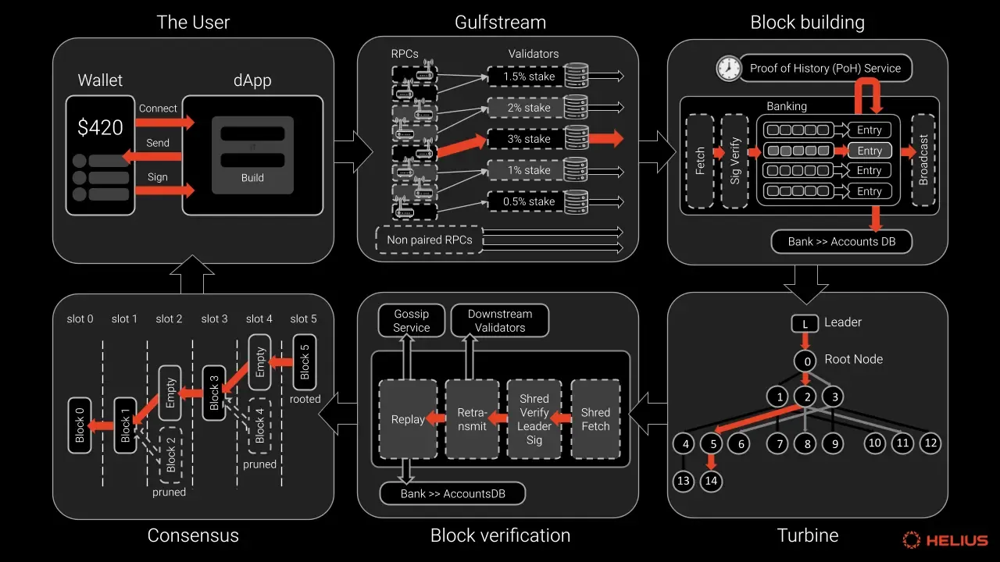
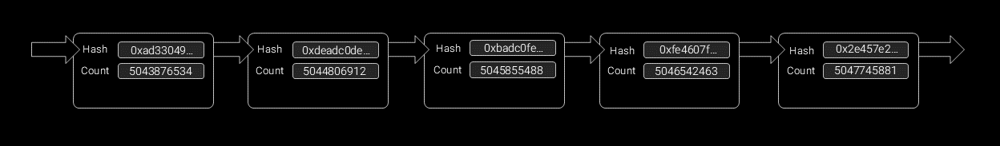
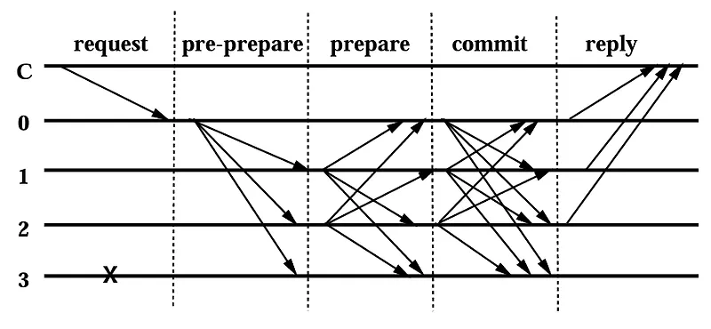

1 / 32
SOLANA
From Basics to Transaction Lifetime
A comprehensive journey through Solana's architecture, from fundamental concepts to the complete transaction processing lifecycle
What you'll learn: Leader mechanisms, PoH consensus, transaction structure, Gulfstream forwarding, Banking Stage processing, Turbine propagation, and the complete end-to-end transaction flow
High Level Overview
솔라나는 사용자 지갑에서 시작된 트랜잭션이 Gulfstream을 거쳐 블록에 포함되고, Turbine 프로토콜을 통해 전파된 후 합의에 이르는 혁신적인 아키텍처를 가지고 있습니다. 이 다이어그램은 전체적인 흐름을 시각적으로 보여줍니다.

핵심 특징:
- 멤풀 없는 아키텍처 - 트랜잭션이 대기하지 않고 직접 리더에게 전달
- PoH 기반 시간 동기화 - 글로벌 시계 역할로 합의 효율성 극대화
- 병렬 트랜잭션 처리 - 계정 충돌 사전 검사로 동시 실행 가능
- 효율적인 블록 전파 시스템 - Turbine 프로토콜로 O(log N) 전파
- 연속적 블록 생성 - 400ms 슬롯마다 실시간 블록 생성
성능 우위: 이러한 혁신적 설계로 솔라나는 초당 65,000+ 트랜잭션 처리, $0.00025 평균 수수료, 400ms 블록 시간을 달성하며 블록체인 트릴레마(확장성, 보안성, 탈중앙화)를 동시에 해결합니다.
The Scalability Challenge
Why Blockchain Needs to Scale
확장성은 블록체인 업계의 지속적인 도전과제입니다. 탈중앙화 금융의 폭발적인 성장과 함께 블록체인의 확장성 수요가 증가하고 있습니다.
🟣 솔라나의 접근법
솔라나의 철학: 솔라나는 더 간단하고 직접적인 접근을 취합니다 — 글로벌 탈중앙화 애플리케이션을 위한 확장성이 뛰어난 개방형 인프라를 제공하는 초고속, 안전하고 검열 저항적인 레이어1 퍼블릭 체인을 제공합니다.
목표: 독창적인 PoH 합의 덕분에 업계 최고 성능을 자랑하는 솔라나는 세계 최초의 웹 레벨 탈중앙화 네트워크가 되는 길을 걷고 있습니다.
The Basics
Core Components of Solana
Leader
특정 시간(슬롯) 동안 블록을 생성할 책임이 있는 검증자(Validator). 약 1.6초(4 슬롯) 동안 연속으로 블록을 생성합니다.
Transaction
솔라나 블록체인의 상태를 변경하기 위한 서명된 지시사항들의 묶음. 모든 계정을 미리 명시하여 병렬 처리가 가능합니다.
Proof of History (PoH)
트랜잭션의 순서를 암호학적으로 증명하여 노드 간 합의를 빠르게 만드는 글로벌 시계 역할을 하는 기술입니다.
QUIC Protocol
UDP 기반의 저지연, 고성능 네트워킹 프로토콜로, 트랜잭션 전송을 최적화하고 빠른 재연결을 지원합니다.
Leaders and Network Roles
Comprehensive Network Architecture

솔라나 생태계에는 여러 역할(리더, 검증자, 아카이버 등)이 있습니다. DPoS 블록체인과 달리, 솔라나는 네트워크 참여자들 사이에 이러한 역할을 위임하지 않고, 솔라나의 노드들은 모든 네트워크 역할을 수행하는 데 참여합니다.
리더 (Leaders)
새로운 블록을 생성하는 임무를 담당합니다. 리더는 4개 블록마다(1.6초) 순환합니다. 노드가 리더 위치를 차지하는 동안 모든 트랜잭션을 4개 블록에 담고 이를 솔라나 클러스터에 보여줍니다.
검증자 (Validators)
디지털 타임스탬프를 참조로 사용하여 트랜잭션을 검증하고 네트워크의 다른 관련 노드에 빠르게 기록을 전달합니다.
아카이버 (Archivers)
네트워크 데이터의 장기 저장을 담당하여 네트워크의 역사적 무결성을 보장합니다.
통합 역할
모든 노드가 네트워크의 모든 역할 수행에 참여하여 진정한 탈중앙화를 실현합니다.
Leader Rotation Mechanism
Asynchronous Leadership for Security
리더는 정확하게 선택되지만, 한 번에 하나의 리더만 있다는 단점도 존재합니다. 악의적인 리더는 투표와 트랜잭션을 검열할 수 있습니다. 검열은 네트워크가 패킷을 드롭하는 것과 구별할 수 없기 때문에, 클러스터는 단순히 단일 노드를 무기한 리더 역할에 선출할 수 없습니다.
보안 문제 해결
악의적인 리더의 위험을 "순환" 메커니즘을 통해 회피합니다. 이는 검열 가능성을 최소화하고 네트워크 보안을 보장합니다.
비동기 결정
솔라나에서 리더 순환 결정은 비동기적으로 이루어집니다. 이 핵심 혁신은 스택 위쪽의 설계 공간을 열어주었습니다.
리더 스케줄
각 리더는 "리더 스케줄"이라는 슬롯 순서 목록에서 슬롯을 할당받으며, 각 검증자는 동일한 알고리즘을 사용하여 예상 리더를 선택할 수 있습니다.
검증 가능성
검증자가 새로운 서명된 원장 항목을 받으면, 해당 항목이 예상된 리더에 의해 생성되었음을 확신할 수 있습니다.
1
Genesis 구성
Genesis 구성은 첫 번째 에포크의 첫 번째 리더를 선언합니다. 이 리더는 다음 에포크를 위한 리더 스케줄도 슬롯 0에서 생성되기 때문에 처음 두 에포크에 대해 스케줄됩니다.
2
최소 에포크 길이
첫 번째 에포크의 최소 길이는 Tower BFT에서 정의된 최대 롤백 깊이보다 크거나 같아야 합니다.
3
지속적 순환
PoH의 지원을 받아 리더와 검증자는 순환 가능하며, 네트워크는 "영구 운동 기계"가 됩니다.
Leader Schedule Generation
Advanced Algorithmic Leader Selection
시스템 판단의 원활함을 보장하기 위해 "리더 스케줄"의 스케줄링은 할당된 슬롯보다 훨씬 앞서 계산되어야 하므로, 스케줄을 계산하는 데 사용하는 원장 상태가 최종화될 수 있습니다.
1
PoH 틱 높이 시드
주기적으로 PoH 틱 높이(단조 증가 카운터)를 사용하여 안정적인 의사 랜덤 알고리즘에 시드를 제공합니다.
2
활성 세트 샘플링
해당 높이에서 클러스터 구성된 틱 수 내에서 투표한 리더 ID를 가진 모든 스테이킹된 계정에 대해 bank를 샘플링합니다. 이 샘플을 활성 세트라고 합니다.
3
스테이크 가중치 정렬
활성 세트를 스테이크 가중치별로 정렬합니다.
4
가중 선택
랜덤 시드를 사용하여 스테이크로 가중된 노드를 선택하여 스테이크 가중 순서를 만듭니다.
5
스케줄 활성화
이 순서는 클러스터 구성된 틱 수 후에 유효해집니다. 이 기간을 리더 스케줄 오프셋이라고 합니다.
1 에포크
스케줄 오프셋 기간
100,000
관리 가능한 멤풀 크기
50,000
네트워크 처리량 (TPS)
수 초
멤풀 실행 시간
에포크 경계 처리: 에포크의 기간이 하나의 에포크를 초과하지 않으면, 이 통신은 중단되지 않고 계속 작동합니다. 검증자는 투표할 때 자체 루트 포크를 지속적으로 업데이트하며, 슬롯 높이가 에포크 경계를 넘을 때마다 리더 스케줄을 업데이트합니다.
Gulf Stream & Network Efficiency
One Step Ahead Philosophy
네트워크 처리량을 증가시키지 않고도 솔라나 검증자들은 100,000개의 멤풀 크기를 관리할 수 있습니다. 이는 50,000 TPS의 네트워크 처리량으로 100,000개의 트랜잭션 멤풀이 수 초 안에 실행됨을 의미합니다.
Gulf Stream 전략
검증자들은 포워딩을 네트워크 가장자리로 밀어내며, 이를 Gulf Stream이라고 합니다. 모든 검증자가 향후 리더의 순서를 알고 있기 때문에, 검증자들은 예상 리더에게 미리 트랜잭션을 전달합니다.
사전 실행
이를 통해 검증자들이 트랜잭션을 미리 실행하고, 확인 시간을 줄이며, 리더를 더 빠르게 전환하고, 미확인 트랜잭션 풀로부터 검증자의 메모리 압력을 줄일 수 있습니다.
메모리 최적화
미확인 트랜잭션 풀로부터 검증자의 메모리 압력을 줄여 솔라나가 초당 최대 50,000개의 트랜잭션을 처리할 수 있게 합니다.
한 발 앞선 처리
오류와 실패를 우회하여 올바른 정보를 처리하는 "한 발 앞선" 개념의 중요한 구현입니다.
🔴 전통적 접근법
🟣 솔라나 Gulf Stream
한 발 앞선 철학: 솔라나의 핵심 혁신은 PoH로, 솔라나의 네트워크가 허가 없이 시간 소스를 인증할 수 있게 하고 합의에 도달하기 전에 작업할 수 있어 확장성과 유동성을 크게 향상시킵니다. 리더 순환 메커니즘은 "한 발 앞선" 개념의 중요한 구현입니다: 리더 스케줄 생성에서 한 발 앞서고, 새로운 리더에게 트랜잭션과 정보를 푸시하는 데 한 발 앞서며, 올바른 정보를 처리하는 데 한 발 앞서 오류와 실패를 우회합니다.
Leader Mechanism Summary
Key Innovations & Impact
솔라나의 독특한 합의 및 다양한 메커니즘으로 솔라나는 이제 암호화 세계에서 큰 영향력을 가지고 있으며, 생태계의 채택률이 어느 정도까지 증가할지 지켜볼 것입니다.
🎯 신뢰 없는 비동기 처리
PoH를 통한 시간 인증으로 허가 없이 작동하며 합의 도달 전에 작업을 수행하여 확장성과 유동성을 크게 향상시킵니다.
🔄 영구 운동 기계
네트워크 상태에 관계없이 오류 발생 시에도 중단되지 않고 즉시 다음 작업을 시작하는 자체 복구 시스템입니다.
⚡ 한 발 앞선 처리
리더 스케줄 생성, 트랜잭션 전달, 정보 처리에서 모두 한 발 앞서 오류와 실패를 우회하여 처리 속도를 극대화합니다.
🌐 확장성 혁신
레이어1에서 직접 50,000 TPS 달성, 100,000 트랜잭션 멤풀 관리로 복잡한 레이어2 솔루션 없이 확장성 문제 해결
핵심 성과:
- 처리 속도: 처리 속도 측면에서 한 발 앞선 솔라나
- 메모리 효율성: 검증자의 메모리 압력 감소로 성능 최적화
- 네트워크 안정성: 악의적 리더 위험을 순환 메커니즘으로 해결
- 예측 가능성: 사전 계산된 리더 스케줄로 네트워크 예측성 향상
- 비동기 혁신: 스택 위쪽 설계 공간을 열어주는 비동기 리더 순환
미래 전망: 솔라나의 리더 메커니즘은 블록체인 확장성 문제에 대한 근본적 해결책을 제시하며, Web3 대중화를 위한 필수 인프라로 자리잡고 있습니다.
Proof of History (PoH)
연속적 해시 체인을 통한 시간 증명

핵심 아이디어: hash_2 = Hash(hash_1)과 같이 끊임없이 반복되는 연속적인 계산 과정을 통해, 특정 시점으로부터 얼마나 많은 계산이 이루어졌는지를 암호학적으로 증명
PoH는 PBFT 대비 시간 증명에 대한 합의 과정을 생략시키고, 통신 오버헤드를 극적으로 줄여 솔라나가 높은 TPS를 달성하는 핵심적인 역할을 합니다.
Transaction Structure
Anatomy of a Solana Transaction

트랜잭션은 솔라나 블록체인의 상태를 변경하기 위한 서명된 지시사항들의 묶음입니다. 단순한 토큰 전송부터 복잡한 스마트 컨트랙트 실행까지 모든 활동은 트랜잭션을 통해 이루어집니다.
병렬 처리의 비밀: 솔라나는 트랜잭션마다 참조될 모든 계정을 데이터 안에 미리 포함합니다. 덕분에 노드는 실행 전에 관련 계정을 한눈에 파악할 수 있고, 사용자는 트랜잭션을 보낼 때 필요한 계정을 모두 지정해야 합니다. 이 설계 철학은 솔라나 프로그램(스마트 컨트랙트)을 작성할 때 특히 두드러지며, 계정 충돌을 사전에 제거해 병렬 처리가 극대화되면서 압도적인 TPS를 달성할 수 있습니다.
개발자 워크플로우
솔라나 프로그램을 작성할 때, 개발자는 1) Instruction을 호출하는 트랜잭션에 필요한 모든 계정을 지정하고, 2) 그 계정들을 대상으로 원하는 로직을 실행하는 Instruction(명령)을 정의하는 흐름을 따릅니다.
수수료 구조
총 수수료 = 우선순위 수수료 + 기본 수수료. 기본 수수료는 서명당 5,000 램포트이며, 우선순위 수수료는 컴퓨팅 유닛 가격 × 컴퓨팅 유닛 한도로 계산됩니다.
Transaction Lifetime
Complete Journey: 10 Critical Steps
사용자 지갑에서 시작된 트랜잭션이 최종 합의에 이르기까지의 전체 여정을 살펴보겠습니다.
1-3
Transaction Submission & Gulfstream
4-5
Leader Processing & Block Building
6-8
Turbine Propagation & TVU
9-10
Consensus & Finalization
Transaction Lifecycle: Steps 1-5
1
트랜잭션 송신
클라이언트가 RPC 프로바이더로 트랜잭션을 전송합니다. RPC 프로바이더는 트랜잭션을 RPC 노드에게 전달합니다.
2
걸프스트림(Gulfstream)
RPC 노드가 현재 및 다음 리더에게 트랜잭션을 전달합니다. 멤풀 없이 트랜잭션을 효율적으로 선-전송하여 처리 대기 시간을 최소화합니다.
3
리더 처리
현재 슬롯의 리더는 PoH 시퀀스에서 트랜잭션의 순서를 확인하고, 트랜잭션의 유효성을 검증한 후, 상태(State)를 업데이트합니다.
4
블록 완성 & 전파 준비
Bank 업데이트가 완료되면, 리더는 완성된 블록 + PoH 해시를 다른 검증자에게 전파합니다.
5
터빈(Turbine) 프로토콜
Turbine은 블록 데이터를 여러 Shred로 분할하며, Shred마다 루트 노드를 돌려가며 병렬 전송합니다(트리 방식).
Transaction Lifecycle: Steps 6-10
6
검증자 수신
검증자들이 블록 Shred를 수신하고, PoH 해시를 받아 자체 PoH를 업데이트합니다. 받은 Shred를 자신의 Turbine 하위 노드로 재전송합니다.
7
TVU(Transaction Validation Unit)
모든 Shred 검증이 완료되면 로컬 Bank를 업데이트합니다. 전체 과정은 TVU 모듈 내부에서 동작합니다.
8
Replay Stage (TVU 핵심)
Replay Stage에서 대부분의 핵심 로직이 실행됩니다: 블록 투표(voting), PoH reset, Bank(state) 변경 반영, 차기 리더 전환
9
PBFT 스타일 합의
Solana는 PBFT 기반 합의를 수행하되, PoH clock 덕분에 노드 간 통신을 최소화하면서 투표가 가능합니다.
10
체인 품질 보장
슬롯마다 단 하나의 리더만 블록을 제안할 수 있으며, 전 노드가 PoH로 시간 동기화하여 포크 확률을 감소시킵니다.
Core Technologies
The Building Blocks of Performance
Gulfstream
멤풀 없는 아키텍처로 트랜잭션을 미리 정해진 리더에게 직접 전달. SWQoS로 지분 기반 우선순위 제공.
Banking Stage
6개 스레드(4개 일반 + 2개 투표)로 병렬 처리. 64개 비충돌 트랜잭션을 엔트리로 묶어 동시 실행.
Turbine
비트토렌트 영감의 블록 전파. 1280바이트 Shred로 분할, FEC로 50% 손실까지 복구 가능.
SVM
Solana Virtual Machine. rBPF 기반으로 eBPF 프로그램의 JIT 컴파일 및 실행 담당.
Ethereum vs Solana
Transaction Processing Comparison
🔷 Ethereum
1
Mempool: 트랜잭션이 mempool에 대기
2
블록 제안: 제안자가 트랜잭션 선택 후 블록 생성
3
합의: 검증자들이 블록에 투표
4
확정: 2/3 투표로 블록 확정
🟣 Solana
1
실시간 처리: 리더가 즉시 트랜잭션 처리
2
PoH 순서: 트랜잭션 순서를 PoH로 확정
3
스트리밍: 처리 결과를 실시간 전파
4
투표: 검증자들이 슬롯에 투표
QUIC Protocol Deep Dive
UDP-Based High-Performance Networking
2022년 말 솔라나에서 리더 교체 트랜잭션 관리를 위해 적용한 UDP 기반의 네트워킹 프로토콜입니다. 구글에서 주도적으로 개발하다 현재는 IETF 표준화가 진행되고 있습니다.
⚡ 저지연 & 빠른 재연결
TCP와 달리 핸드셰이크 과정이 간소화되어 지연이 줄어들고, TLS 기반 보안을 UDP 레벨에서 바로 제공합니다. 솔라나의 400ms 블록 시간에 최적화되어 있습니다.
🔄 스트림 다중화
단일 연결에서 여러 스트림을 동시에 전송할 수 있어 네트워크 상태가 자주 변하는 상황에서 유리합니다. 리더 교체 시 빠른 연결 재설정이 가능합니다.
🚀 높은 성능
UDP 기반으로 대량의 데이터를 처리할 때 성능 저하를 방지하고, 스트림 단위로 오류를 격리합니다. 초당 수천-수만개 트랜잭션 처리에 최적화되어 있습니다.
🔒 안정적 암호화
TLS 1.3 암호화를 기본 적용하여 안전하고, 흐름 제어를 애플리케이션 레벨에서 쉽게 튜닝 가능합니다.
솔라나에서 QUIC가 중요한 이유: 솔라나의 빠른 블록 생성 간격(400ms)과 빈번한 리더 교체에서 모든 검증자가 새 리더와 빠른 연결을 맺어야 하므로, QUIC의 저지연 특성이 핵심적입니다. 기존 TCP로는 혼잡 제어와 순차적 패킷 전송으로 인한 병목이 발생하지만, QUIC은 이를 해결합니다.
Gulfstream: Mempool-less Architecture
Efficient Transaction Forwarding

걸프스트림은 네트워크에서 한 노드가 트랜잭션을 수신한 순간부터 해당 슬롯의 리더에게 전달되어 TPU의 Fetch Stage에서 받아들여지기까지의 전 과정을 가리킵니다. 일반적으로 User → RPC Node → Validator → Leader의 fetch까지의 과정을 의미합니다.
🔴 기존 블록체인 (Mempool)
🟣 솔라나 (Gulfstream)

Banking Stage: Parallel Processing Engine
The Heart of Solana's Performance
Banking Stage는 블록 생성 과정을 담당하는, TPU에서 가장 중요한 단계입니다. 여기서 bank란 특정 블록 시점에서의 상태 스냅샷입니다. 솔라나는 Banking Stage를 통해 트랜잭션 처리의 병목 현상을 해결하고, 하드웨어의 멀티코어 성능을 최대한 활용합니다.
6
총 처리 스레드
4
일반 트랜잭션 스레드
2
투표 전용 스레드
64
엔트리당 최대 트랜잭션
1
트랜잭션을 엔트리로 묶기
충돌이 없는 64건의 트랜잭션을 하나의 엔트리로 구성. 같은 계정을 동시에 쓰거나, 하나는 읽고 다른 하나는 쓰는 경우 충돌로 판단하여 다른 엔트리에 배치.
2
필요한 계정들을 모두 잠금
트랜잭션에서 읽고 쓸 모든 계정 목록이 미리 명시되어 있어 Race condition을 방지하고 병렬 처리 수행.
3
트랜잭션 최신성 및 중복 이력 확인
Recent Blockhash 검증과 중복 트랜잭션 검사를 통해 유효성 확인.
4
SVM에서 트랜잭션 로직 실행
Solana Virtual Machine(rBPF 기반)에서 eBPF 프로그램의 JIT 컴파일 및 실행.
Turbine: BitTorrent-Inspired Block Propagation
Efficient Network Distribution
Turbine은 리더가 자신의 블록을 네트워크 나머지 부분에 전파하는 과정입니다. 비트토렌트(BitTorrent)에서 영감을 받아 빠르고 효율적으로 설계되어, 리더와 루트 노드의 외부 데이터 이탈 압력을 완화합니다.
Shreds (슈레드)
블록 데이터를 분해한 작은 데이터 패킷. 비디오 스트림의 개별 프레임과 유사하며, 최대 1280바이트 크기로 UDP를 사용하여 검증자들 간 전송됩니다.
FEC (Forward Error Correction)
64개 Shreds(32개 데이터 + 32개 복구)로 구성된 배치. 절반까지 손실되어도 모든 데이터를 복구할 수 있는 다항식 기반 소거 코딩 방식.
Turbine Tree
검증자들이 층(Layer)으로 조직되어 트리 형성. 지분이 많은 검증자가 상단에 배치되며, 일반적으로 2-3개의 홉(hops)으로 전체 네트워크에 전파.
동적 보안
각 64 Shreds 배치는 머클화되며, 루트는 리더에 의해 서명. 보안상 이유로 트리의 순서는 각 새로운 Shreds 배치마다 회전됩니다.
1280
최대 Shred 크기 (바이트)
64
FEC 배치당 Shred 수
50%
최대 복구 가능 손실률
200
실제 팬아웃 값
Network Architecture & Timing
Precise Coordination at Scale
솔라나는 대부분의 블록체인과 달리 연속적인 블록 생성 방식을 사용합니다. 할당된 시간 슬롯 동안 실시간으로 블록을 조립하고 스트리밍하여 높은 처리량을 달성합니다.
400ms
각 슬롯 지속 시간
4개
연속 할당 슬롯 수
1.6초
총 리더 시간
2슬롯
리더 준비 시간
1
에포크마다 리더 스케줄 계산
매 에포크(약 2-3일)마다 네트워크 스냅샷을 기준으로 지분 증명(PoS) 가중 라운드로빈 방식으로 리더 순서표가 계산됩니다. 모든 노드는 "슬롯 → 리더" 매핑을 미리 알고 있습니다.
2
리더 준비 단계
리더가 되기 2슬롯 전에 트랜잭션 전달을 중단하고 준비합니다. 이 기간 동안 기가바이트/초 수준의 트래픽 폭증이 발생하며, 네트워크 전체가 곧 리더가 될 노드에게 패킷을 집중 전송합니다.
3
연속적 블록 생성
할당된 4개 슬롯(1.6초) 동안 연속으로 블록을 생성합니다. 대부분의 블록체인과 달리 블록을 모두 조립한 뒤 전파하는 것이 아닌, 실시간으로 조립 및 스트리밍합니다.
사전 예측의 장점: 트랜잭션은 "미래 리더"에게 바로 전달되므로, 줄 서기 지연이 크게 줄어들고 처리량(TPS)이 높아집니다. 이는 Gulfstream의 핵심 메커니즘입니다.
Economic Model & Transaction Fees
Sustainable and Efficient Fee Structure
솔라나는 매우 낮은 수수료와 예측 가능한 비용 구조를 제공합니다. SOL의 가장 작은 단위를 "램포트(lamport)"라고 하며, 이는 SOL의 10억분의 1에 해당합니다.
기본 수수료 (Base Fee)
트랜잭션의 복잡성과 관계없이 서명당 부과되는 고정 비용입니다. 보통 서명당 5,000 램포트로 설정되어 예측 가능한 비용 구조를 제공합니다.
우선순위 수수료
기술적으로는 선택 사항이지만, 네트워크 수요가 높을 때 블록에 포함될 가능성을 높이기 위해 사용됩니다. 컴퓨팅 유닛 가격 × 컴퓨팅 유닛 한도로 계산됩니다.
로컬 수수료 시장
특정 스마트 컨트랙트에 대한 수요가 전체 네트워크의 수수료에 영향을 주지 않도록 하는 메커니즘입니다. 이는 네트워크 전체의 안정성을 보장합니다.
검증자 보상
리더가 수집한 수수료(MEV) + 인플레이션 보상을 받습니다. 리더 역할을 제대로 수행하지 못하면 보상을 잃게 되므로 정직한 행동을 유도합니다.
$0.00025
평균 트랜잭션 수수료
5,000
서명당 기본 수수료 (램포트)
1분
Recent Blockhash 유효 시간
150
유효 슬롯 수
총 수수료 = 우선순위 수수료 + 기본 수수료
(우선순위 수수료 = 컴퓨팅 유닛 가격 × 컴퓨팅 유닛 한도)
(우선순위 수수료 = 컴퓨팅 유닛 가격 × 컴퓨팅 유닛 한도)
Security & Consensus Mechanisms
Tower BFT + Proof of History
솔라나는 PBFT(Practical Byzantine Fault Tolerance) 기반의 Tower BFT 합의 메커니즘과 PoH를 결합하여 높은 보안성과 효율성을 동시에 달성합니다.

🔴 기존 PBFT
🟣 Tower BFT + PoH
1
PoH 기반 시간 동기화
모든 노드가 PoH 해시 체인을 통해 글로벌 시계를 공유합니다. 이로 인해 시간 증명에 대한 별도의 합의 과정이 불필요해집니다.
2
슬롯 기반 투표
검증자들은 개별 트랜잭션이 아닌 슬롯 단위로 투표합니다. "이 슬롯은 유효하다"라고 투표하여 효율성을 높입니다.
3
포크 확률 최소화
슬롯마다 단 하나의 리더만 블록을 제안할 수 있으며, 전 노드가 PoH로 시간 동기화하여 동일 높이에서 서로 다른 상태가 존재할 가능성을 낮춥니다.
Real-world Performance & Ecosystem
Production-Ready Blockchain Infrastructure
솔라나는 이론적 성능뿐만 아니라 실제 운영 환경에서도 탁월한 성능을 보여주며, 다양한 분야에서 활발히 사용되고 있습니다.
1,800+
검증자 노드 수
400M+
일일 트랜잭션 수
99.9%
네트워크 가동률
$40B+
총 스테이킹 가치
🏦 DeFi Ecosystem
Serum, Raydium, Orca 등 주요 DEX들이 솔라나의 높은 처리량과 낮은 수수료를 활용하여 사용자 친화적인 거래 경험을 제공합니다.
🎨 NFT & Digital Art
Magic Eden, Solanart 등 NFT 마켓플레이스들이 빠른 거래와 낮은 비용으로 크리에이터와 컬렉터들에게 최적의 환경을 제공합니다.
🎮 GameFi & Metaverse
Star Atlas, Stepn 등 게임들이 솔라나의 실시간 성능을 활용하여 블록체인 게임의 새로운 가능성을 보여줍니다.
💳 Payments & Web3
Phantom, Solflare 등 지갑들과 결제 인프라가 일상적인 Web3 사용을 가능하게 합니다.
기업 도입 사례: Visa는 솔라나에서 USDC 결제 테스트를 성공적으로 완료했으며, Reddit은 아바타 NFT를 솔라나에서 발행했습니다. 이는 솔라나가 엔터프라이즈급 성능과 안정성을 갖추었음을 보여줍니다.
Future Developments & Conclusion
The Road Ahead for Solana
솔라나는 현재의 혁신적인 성능을 바탕으로 더욱 발전된 기술들을 개발하고 있으며, 블록체인 생태계의 미래를 이끌어가고 있습니다.
🔄 SVM 롤업
Solana Virtual Machine을 활용한 레이어 2 솔루션으로 확장성을 더욱 향상시킬 예정입니다. 이를 통해 더 복잡한 애플리케이션도 효율적으로 처리할 수 있게 됩니다.
🗜️ ZK Compression
영지식 증명을 통한 데이터 압축으로 스토리지 효율성과 처리 속도를 개선합니다. 상태 압축을 통해 대규모 애플리케이션의 비용을 크게 절감할 수 있습니다.
🌍 글로벌 채택
DeFi, NFT, GameFi 등 다양한 분야에서 생태계가 확장되고 있으며, 지속적인 개발자 및 사용자 유입이 이루어지고 있습니다.
⚡ 성능 최적화
하드웨어 발전과 함께 소프트웨어 최적화를 통해 더 높은 성능 달성을 목표로 하고 있습니다. 지속적인 개선으로 TPS와 효율성을 높이고 있습니다.
65,000+
초당 트랜잭션 처리량 (TPS)
400ms
평균 블록 시간
$0.00025
평균 트랜잭션 수수료
1.6초
리더당 할당 시간
최종 결론: Solana는 PoH, Gulfstream, Banking Stage, Turbine의 혁신적 조합으로 블록체인 트릴레마(확장성, 보안성, 탈중앙화)를 해결했습니다. 멤풀 없는 아키텍처, 병렬 처리 엔진, 효율적인 합의 메커니즘을 통해 차세대 분산 애플리케이션을 위한 고성능 인프라를 제공하며, 웹3 생태계의 대중화를 이끌어가고 있습니다.
Client Diversity & Infrastructure
Building a Robust Validator Ecosystem
솔라나는 수천 개의 독립적으로 운영되는 노드들이 협력하여 하나의 통합된 원장을 유지하는 네트워크입니다. 각 노드는 "클라이언트"라고 알려진 동일한 오픈소스 소프트웨어를 실행하는 고성능 머신으로 구성됩니다.
🦀 Agave Client
🔥 Firedancer Client
🎯 성능 최적화
Firedancer는 하드웨어 최적화와 저수준 프로그래밍을 통해 기존 대비 수배 향상된 성능을 목표로 합니다.
🛡️ 네트워크 안정성
클라이언트 다양성은 단일 구현체 버그가 전체 네트워크에 미치는 영향을 방지합니다.
🔬 혁신적 접근
서로 다른 프로그래밍 언어와 아키텍처로 개발되어 각각의 장점을 활용합니다.
🌐 글로벌 분산
전 세계적으로 분산된 검증자들이 동일한 소프트웨어를 실행하여 통합된 원장을 유지합니다.
핵심 원칙: "소프트웨어는 하드웨어의 방해가 되어서는 안 된다" - 솔라나의 핵심 원칙 중 하나로, 소프트웨어가 실행되는 하드웨어를 최대한 활용하고 함께 확장되어야 한다는 철학입니다. 이는 수십 년의 분산 시스템 구축 경험을 가진 창립팀의 전문성에서 나온 것입니다.
Accounts Model & State Management
Everything on Solana is an Account
솔라나 검증자 내에서 글로벌 상태는 AccountsDB라고 알려진 계정 데이터베이스에서 유지됩니다. 이 데이터베이스는 메모리와 디스크 모두에 모든 계정을 저장하는 역할을 합니다. 솔라나 개발자들이 자주 말하듯이 "솔라나의 모든 것은 계정입니다!"
👤 사용자 계정
개인키를 가진 계정으로, 일반적으로 사용자를 위해 지갑 소프트웨어에서 생성됩니다.
📊 데이터 계정
사용자가 보유한 특정 토큰 수 등의 상태 정보를 저장하는 계정입니다.
⚙️ 프로그램 계정
실행 가능한 바이트코드를 포함하는 큰 계정으로, Windows의 .exe 파일이나 Mac의 .app 파일과 유사합니다.
🏛️ 네이티브 프로그램
투표 프로그램, BPF 로더 등 네트워크의 다양한 핵심 기능을 수행하는 사전 배포된 특별한 프로그램 계정입니다.
1
렌트 메커니즘
계정을 닫고 상태 팽창을 줄이도록 인센티브를 제공하는 메커니즘입니다. 새 계정을 생성하려면 "렌트 면제" 금액으로 알려진 최소 SOL 잔액을 보유해야 합니다.
2
소유권 모델
계정 데이터 읽기는 누구나 허용되지만, 계정 데이터 수정(쓰기)은 소유자만 가능합니다. 모든 계정에는 프로그램 "소유자"가 있어 보안을 강화합니다.
3
Program Derived Addresses (PDAs)
읽기 전용 실행 파일인 솔라나 프로그램은 PDA를 사용하여 상태를 저장해야 합니다. PDA는 특정 사용자가 아닌 프로그램과 연결되고 소유되는 특별한 유형의 계정입니다.
코드와 상태 분리: 솔라나의 핵심 설계 결정 중 하나는 코드와 상태를 분리하는 것입니다. 프로그램 계정은 실행 가능한 로직만 포함하며, 실행될 때 다른 계정의 상태를 변경하지만 자신은 변경되지 않습니다. 이러한 분리는 솔라나를 다른 블록체인과 차별화하고 많은 최적화를 지원합니다.
TVU & Tower BFT Consensus
Transaction Validation & Byzantine Fault Tolerance
검증자가 Turbine을 통해 리더로부터 새 블록을 받으면, 각 엔트리 내의 모든 트랜잭션을 검증해야 합니다. 이 과정은 Transaction Validation Unit(TVU)에서 처리되며, 이는 리더의 Transaction Processing Unit(TPU)과 유사한 역할을 합니다.
📥 Shred Fetch Stage
Turbine을 통해 shred를 수신하는 단계입니다.
✅ Shred Verify Stage
리더의 서명 검증을 포함한 여러 정상성 검사를 수행합니다.
🔄 Retransmit Stage
Turbine 트리에서의 위치에 따라 적절한 하위 검증자에게 shred를 전달합니다.
🎬 Replay Stage
각 트랜잭션을 정확하고 올바른 순서로 재생성하면서 로컬 bank를 업데이트하는 가장 중요한 단계입니다.
🔴 전통적 PBFT
🗼 Tower BFT
1
투표 메커니즘
검증자들은 유효하다고 믿는 블록(이중 지불이나 잘못된 서명 등의 문제가 없는)에 투표를 제출하고 정식으로 간주되어야 합니다. 정확하고 성공적인 투표를 제출하면 크레딧을 얻습니다.
2
포크 처리
솔라나는 모든 검증자가 새로 생성된 블록에 동의하기를 기다리지 않고 다음 블록을 생성하므로 포크가 발생할 수 있습니다. 검증자들은 이러한 포크에 투표하고 합의 알고리즘을 사용하여 채택할 포크를 결정합니다.
3
최종성 달성
트랜잭션 상태: Processed(블록에 포함) → Confirmed(2/3 과반수 투표) → Finalized(31개 블록 누적). 솔라나 역사상 확인된 블록이 최종화되지 않은 경우는 없습니다.
Gossip Network: The Control Plane
Metadata Distribution & Network Coordination
가십 네트워크는 솔라나 네트워크의 제어 평면으로 생각할 수 있습니다. 트랜잭션 흐름을 처리하는 데이터 평면과 달리, 제어 평면은 연락처 정보, 원장 높이, 투표 정보 등 블록체인 상태에 대한 중요한 메타데이터를 전파합니다.
📡 Push 메시지
가장 일반적인 메시지로, "push peer"의 부분집합과 정보를 공유합니다.
🔄 Pull & Pull Response
놓친 메시지를 주기적으로 확인하며, pull 응답은 노드가 갖지 않은 정보를 다시 보내줍니다.
✂️ Prune
노드가 유지하는 연결 수를 선택적으로 줄일 수 있게 해줍니다.
🏓 Ping & Pong
노드의 상태 검사 - ping이 전송되면 pong이 돌아와야 하며, 이는 피어 노드가 여전히 활성 상태임을 나타냅니다.
0.1초
가십 메시지 전송 주기
1280
최대 전송 단위 (바이트)
10개
가십 레코드 유형 수
4,000+
RPC 노드 수
1
PlumTree 알고리즘
솔라나의 가십 프로토콜은 수정된 PlumTree 알고리즘에서 영감을 받은 트리 브로드캐스트 접근법으로 비공식적이고 피어 투 피어 통신을 사용합니다.
2
CrdsTable 데이터 저장소
가십 데이터는 Cluster Replicated Data Store(CrdsTable)에 저장됩니다. 이 데이터 구조는 매우 커질 수 있어 주기적으로 정리해야 합니다.
3
독립적 운영
가십은 다른 대부분의 검증자 구성 요소와 독립적으로 다소 격리된 시스템으로 작동하여 네트워크 전반에 걸쳐 정보 가용성을 보장합니다.
핵심 역할: 가십 없이는 검증자와 RPC가 다양한 서비스에서 통신을 위해 열려 있는 주소와 포트를 알 수 없습니다. 새로운 노드들도 네트워크에 참여하기 위해 가십에 의존합니다. 모든 가십 메시지는 무결성과 통용성을 보장하기 위해 서명, 버전 관리, 타임스탬프가 적용됩니다.
Economics & Liquid Staking
Inflation, Rewards & Capital Efficiency
솔라나는 매 에포크마다 새로운 SOL 토큰을 생성하여 스테이킹 보상을 분배하기 위해 인플레이션을 사용합니다. 이 과정은 비스테이커의 네트워크 지분이 스테이커 대비 감소하게 하여 비스테이커에서 스테이커로의 부의 이전을 초래합니다.
📈 인플레이션 모델
2021년 초 8%에서 시작하여 매년 15%씩 감소하다가 장기 비율인 1.5%에서 안정화됩니다.
🗳️ 투표 보상
검증자가 정확하고 성공적인 투표를 제출하면 크레딧을 얻습니다. 투표 트랜잭션 비용은 0.000005 SOL이며 우선순위 수수료가 면제됩니다.
🎁 블록 보상
특정 블록의 리더로 지정된 검증자는 모든 기본 수수료의 50%와 우선순위 수수료의 50%를 받으며, 나머지는 소각됩니다.
💧 리퀴드 스테이킹
참가자들은 SOL을 스테이킹하는 대가로 LST(Liquid Staking Token)를 받아 자본 효율성을 크게 향상시킵니다.
🥇 네이티브 스테이킹
💎 리퀴드 스테이킹
90%
최고 성능 검증자 투표율
80%
평균 검증자 투표율
1 SOL
검증자 일일 투표 비용
432,000
에포크당 총 슬롯 수
LST 가격 = (풀의 총 스테이킹 SOL × SOL 가격) ÷ 발행된 총 LST
LST를 기본 스테이킹 SOL로 상환하는 메커니즘이 있는 한, 차익거래 거래자들이 토큰 가격이 합리적으로 유지되도록 보장합니다.
LST를 기본 스테이킹 SOL로 상환하는 메커니즘이 있는 한, 차익거래 거래자들이 토큰 가격이 합리적으로 유지되도록 보장합니다.
Jito & MEV Infrastructure
Blockspace Auctions & Validator Economics
작성 시점 기준으로 솔라나 스테이크의 80% 이상이 Jito 클라이언트 검증자 소프트웨어를 사용합니다. 이 클라이언트는 원래 Agave 클라이언트의 포크로, 팁을 통해 검증자에게 추가적인 경제적 인센티브를 제공하는 프로토콜 외 블록스페이스 경매를 도입합니다.
🎯 Jito-Relayer
오픈소스 트랜잭션 프록시 라우터로 작동합니다. 다른 네트워크 노드는 Jito-Relayer의 존재를 알지 못하며, 단순히 리더가 가십 네트워크를 통해 광고한 주소와 포트 구성으로 트랜잭션을 보냅니다.
⏱️ Speed Bump
릴레이어는 리더에게 전달하기 전에 모든 트랜잭션을 200밀리초 동안 보유합니다. 이 "속도 완충" 메커니즘은 들어오는 트랜잭션 메시지를 지연시켜 경매를 수행할 수 있는 짧은 시간을 제공합니다.
📦 Bundle System
블록스페이스 경매는 Jito Block Engine을 통해 오프체인에서 발생하며, 검색자와 애플리케이션이 번들이라고 알려진 원자적으로 실행되는 트랜잭션 그룹을 제출할 수 있게 합니다.
💰 Fee Structure
Jito는 모든 팁에 대해 5% 수수료를 부과하며, 최소 팁은 10,000 램포트입니다. 팁은 프로토콜 내 우선순위 및 기본 수수료와 별도로 완전히 프로토콜 외부에서 작동합니다.
1
트랜잭션 흐름
Jito 클라이언트를 사용하는 리더의 경우, 트랜잭션이 먼저 Jito-Relayer로 전달됩니다. 200밀리초 후, 릴레이어는 경매 결과에 관계없이 트랜잭션을 낙관적으로 릴리스합니다.
2
번들 경매
이러한 번들은 일반적으로 차익거래나 청산과 같은 시간에 민감한 트랜잭션을 포함합니다. 검색자들은 이러한 기회를 위해 경쟁하며 더 높은 팁을 제공합니다.
3
경제적 인센티브
이러한 추가 인센티브는 검증자 사이에서 Jito 클라이언트가 널리 채택되는 주요 요인입니다. 검증자들은 기본 스테이킹 보상 외에 MEV 수익을 얻을 수 있습니다.
핵심 영향: Jito는 솔라나에서 MEV(Maximum Extractable Value) 추출을 민주화하고 체계화했습니다. 이전에는 정교한 봇들만이 차익거래와 청산 기회를 활용할 수 있었지만, 이제는 보다 공정하고 투명한 경매 시스템을 통해 이루어집니다. 또한 검증자들에게 추가 수익을 제공하여 네트워크 보안을 강화하는 경제적 인센티브를 만들어냅니다.
Archive & Data Availability
Efficient Historical Data Management
솔라나는 계정의 현재 상태를 결정하기 위해 전체 역사가 필요하지 않다는 점에서 다른 블록체인과 차별화됩니다. 솔라나의 계정 모델은 주어진 슬롯에서의 상태가 알려져 있음을 보장하여, 검증자가 모든 과거 블록을 처리하지 않고도 각 계정의 현재 상태를 저장할 수 있게 합니다.
⚡ 효율적 상태 관리
RPC와 검증자는 설계상 전체 과거 원장을 보관하지 않습니다. 대신 일반적으로 1-2 에포크(2-4일) 분량의 트랜잭션 데이터만 저장하며, 이는 체인의 끝을 검증하기에 충분합니다.
🏢 웨어하우스 노드
아카이브는 현재 전문 RPC 서비스 제공업체, 솔라나 재단 및 트랜잭션 이력이 사용 가능하도록 보장하는 데 관심이 있는 기타 생태계 참여자들이 운영하는 "웨어하우스 노드"에서 관리됩니다.
📚 원장 아카이브
처음부터 재생하기에 적합한 원시 원장 및 AccountsDB 스냅샷을 업로드합니다. 이를 통해 전체 네트워크 상태를 복원할 수 있습니다.
🗃️ Google Bigtable
제네시스 블록부터의 블록 데이터를 저장하며, RPC 요청을 제공하도록 형식화되어 있습니다. 빠른 쿼리와 데이터 검색을 지원합니다.
🔴 전통적 블록체인
🟣 솔라나 아카이브
1-2
검증자 보관 에포크 수
2-4일
일반적 데이터 보관 기간
수억
솔라나 계정 수
제네시스
Bigtable 데이터 시작점
핵심 혁신: 이러한 아키텍처는 솔라나가 높은 처리량을 유지하면서도 저장 비용을 최소화할 수 있게 합니다. 대부분의 애플리케이션과 사용자는 최근 상태만 필요하므로, 과거 데이터는 필요에 따라 전문 아카이브 서비스에서 조회할 수 있습니다. 이는 네트워크 전체의 효율성을 크게 향상시킵니다.
Solana: The Future of Web3 Infrastructure
Executive Summary & Roadmap
솔라나는 "소프트웨어는 하드웨어의 방해가 되어서는 안 된다"는 핵심 원칙 하에, 수십 년의 분산 시스템 구축 경험을 바탕으로 통합적 접근을 통해 블록체인 기술을 발전시키고 있습니다.
🎯 성능 우수성
65,000+ TPS, 400ms 블록 시간, $0.00025 평균 수수료로 업계 최고 성능을 자랑하며, 사용자 경험과 개발자 효율성을 동시에 달성합니다.
🏗️ 통합 아키텍처
브리징, 별도 체인 ID, 유동성 분편화 없이 모든 애플리케이션이 하나의 블록체인에서 구축되어 진정한 컴포저빌리티를 실현합니다.
🔮 미래 기술
SVM 롤업과 ZK Compression 등 중요한 확장 솔루션이 개발 중이며, 미래 인식을 형성할 잠재력을 가지고 있습니다.
🌟 생태계 혁신
Firedancer 클라이언트, Jito MEV 인프라, 리퀴드 스테이킹 등을 통해 지속적으로 생태계를 발전시키고 있습니다.
4,000+
RPC 노드
1,800+
검증자 노드
80%
Jito 클라이언트 사용률
99.9%
네트워크 가동률
최종 전망: 솔라나는 "크립토의 애플"이 될 잠재력을 가지고 있으며, 나스닥과 뉴욕 증권거래소와 경쟁할 수 있는 속도로 뉴스가 전 세계를 여행하는 만큼 빠르게 트랜잭션을 처리하는 것을 목표로 합니다. 주류 소비자 앱을 지원할 수 있는 오늘날 유일한 체인으로 인식되고 있으며, Web3 생태계의 미래를 이끌어가고 있습니다.